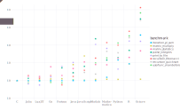

These micro-benchmarks, while not comprehensive, do test compiler performance on a range of common code patterns, such as function calls, string parsing, sorting, numerical loops, random number generation, recursion, and array operations.
It is important to note that the benchmark codes are not written for absolute maximal performance (the fastest code to compute recursion_fibonacci(20) is the constant literal 6765). Instead, the benchmarks are written to test the performance of identical algorithms and code patterns implemented in each language. For example, the Fibonacci benchmarks all use the same (inefficient) doubly-recursive algorithm, and the pi summation benchmarks use the same for-loop. The “algorithm” for matrix multiplication is to call the most obvious built-in/standard random-number and matmul routines (or to directly call BLAS if the language does not provide a high-level matmul), except where a matmul/BLAS call is not possible (such as in JavaScript).

The benchmark data shown above were computed with Julia v1.0.0, SciLua v1.0.0-b12, Rust 1.27.0, Go 1.9, Java 1.8.0_17, Javascript V8 6.2.414.54, Matlab R2018a, Anaconda Python 3.6.3, R 3.5.0, and Octave 4.2.2. C and Fortran are compiled with gcc 7.3.1, taking the best timing from all optimization levels (-O0 through -O3). C, Fortran, Go, Julia, Lua, Python, and Octave use OpenBLAS v0.2.20 for matrix operations; Mathematica uses Intel® MKL. The Python implementations of matrix_statistics and matrix_multiply use NumPy v1.14.0 and OpenBLAS v0.2.20 functions; the rest are pure Python implementations. Raw benchmark numbers in CSV format are available here and the benchmark source code for each language can be found in the perf. files listed here. The plot is generated using this IJulia benchmarks notebook.
These micro-benchmark results were obtained on a single core (serial execution) on an Intel® Core™ i7-3960X 3.30GHz CPU with 64GB of 1600MHz DDR3 RAM, running openSUSE LEAP 15.0 Linux.